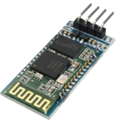
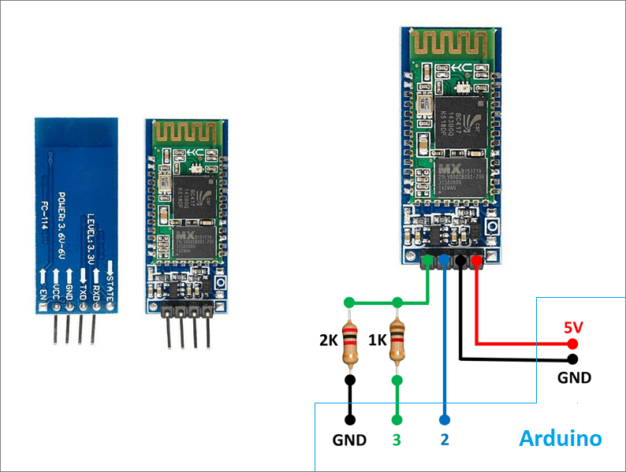
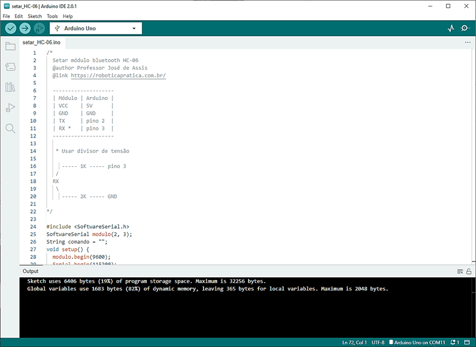
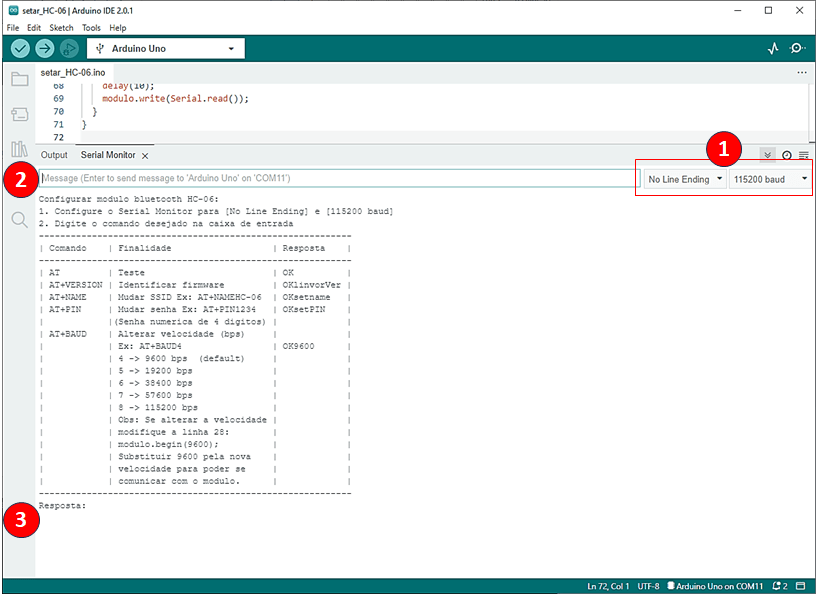

Como configurar o módulo Bluetooth HC-06 no Arduino
Neste tutorial, você vai aprender passo a passo como configurar o módulo HC-06 para se comunicar com o Arduino usando Bluetooth. O HC-06 permite estabelecer uma comunicação sem fio com placas Arduino que não dispõem desse recurso.

Por padrão, o HC-06 vem com os seguintes parâmetros:
- SSID: HC-06
- Senha: 1234
- Velocidade: 9600 bps
Mas como bons makers, não vamos nos contentar com as configurações de fábrica. Para personalizar o SSID, a senha e alterar a velocidade, usaremos uma placa Arduino para enviar comandos AT, que são basicamente instruções que o módulo entende, como uma linguagem secreta dos modems. 🤖
Vamos montar o circuito, fazer o upload de um código simples, abrir o Serial Monitor e enviar os primeiros comandos para deixar o HC-06 do jeitinho que a gente quer.
Vamos lá!
Parte 1 - Montagem do circuito elétrico:
Lista de material:
- 1 Arduino UNO ou compatível
- 1 módulo bluetooth HC-06
- 1 resistor de 1KΩ (marrom preto vermelho dourado)
- 1 resistor de 2KΩ (vermelho preto vermelho dourado)
Ligue o módulo HC-06 ao Arduino conforme o diagrama abaixo. Os resistores são usados como divisor de tensão para reduzir os 5V do Arduino para 3,3V no pino RX do módulo (importante para não danificar o bluetooth).

Parte 2 - Código fonte
Baixe o código e faça o upload para a placa Arduino.
setar_HC-06.ino ⬇️

Parte 3 - Configuração
- Ative o Serial Monitor e configure para [No Line Ending] e [115200 baud].
- Digite o comando desejado na caixa de entrada.
- Se tudo estiver OK, o módulo irá responder e executar a ação desejada.
⚠️ Pode ser necessário reiniciar o Serial Monitor.
✅ Por fim, faça um teste pareando o módulo no celular! 📱
